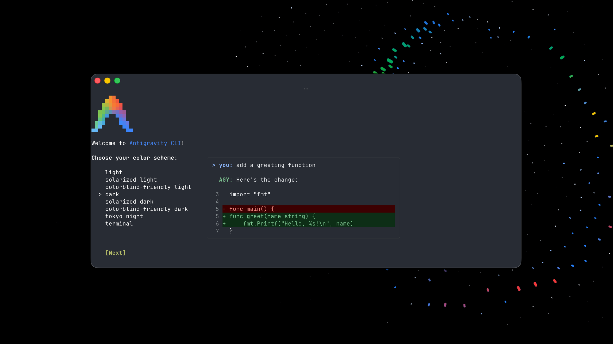
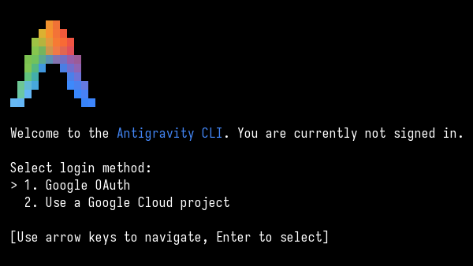
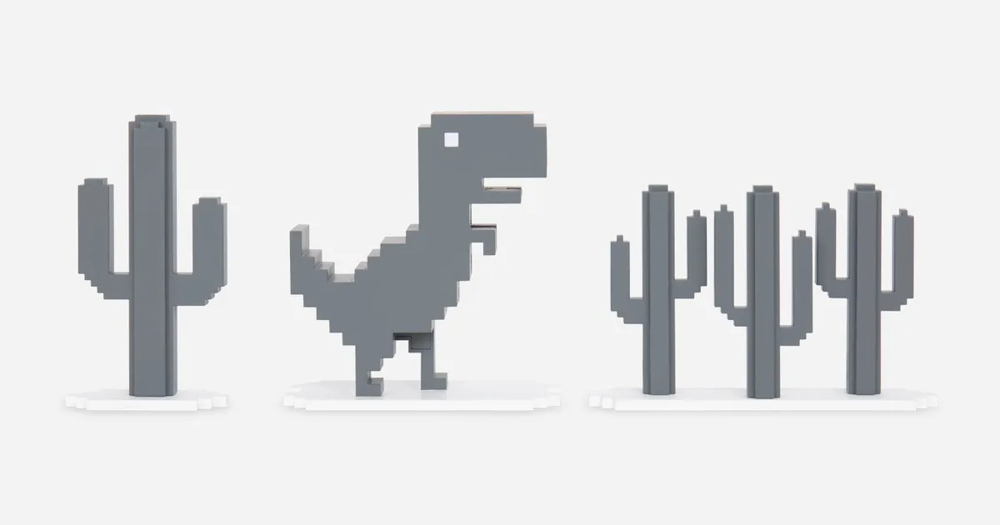
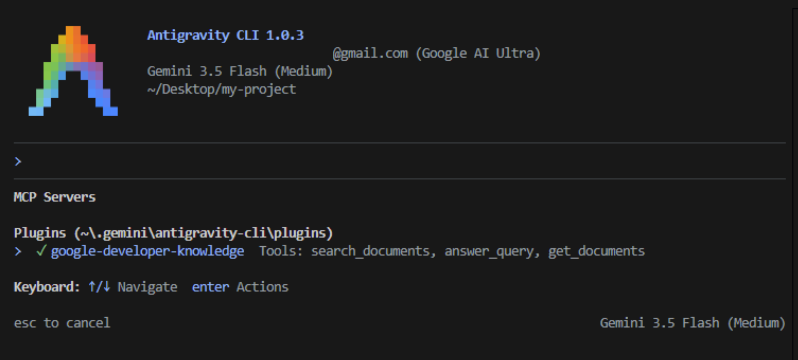
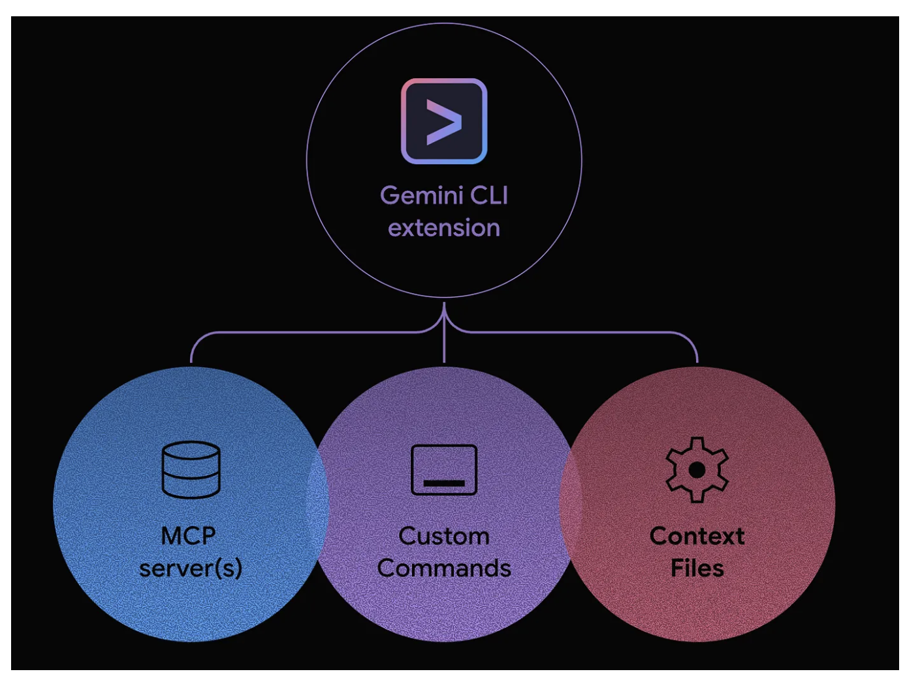

¡Bienvenido al taller de Antigravity CLI! En este codelab, aprenderás a instalar, configurar y utilizar la interfaz de línea de comandos (CLI) de Antigravity (agy) para potenciar tu flujo de trabajo de desarrollo con agentes de IA.
Este taller está impartido por Carlos Alarcon. Conoce más en carlos-alarcon.com.
Antigravity CLI (agy) no es solo un chat; es un agente colaborativo potente que vive en tu terminal, entiende tu código, realiza ediciones en tus archivos y puede ejecutar tareas complejas utilizando herramientas del sistema bajo tu supervisión y consentimiento.
Lo que aprenderás
- Cómo instalar y autenticar Antigravity CLI (
agy) - Cómo interactuar con el agente desde tu terminal
- Cómo proporcionar contexto de tus archivos locales usando el símbolo
@ - Cómo ejecutar comandos de sistema y entender el flujo de permisos de seguridad
- Cómo gestionar permisos y accesos detallados a archivos locales y comandos (`permissions` en `settings.json`)
- Cómo utilizar herramientas integradas de navegación web
- Integración con MCP (Model Context Protocol) para conectar herramientas y datos externos
- Cómo extender la CLI con Customizaciones: Rules, Skills y paquetes de plugins
- Cómo configurar el comportamiento de la CLI con
settings.json
Requisitos previos
- Un entorno de terminal (Linux, macOS, Windows WSL/PowerShell)
curlinstalado en tu sistema- Una cuenta de Google para la autenticación del agente
Cómo está estructurado cada paso
Para que avances sin perderte, cada paso de este taller sigue siempre el mismo ritmo:
- 🎯 Objetivo: qué vas a lograr en una frase.
- 👉 Copia y pega: el comando o prompt exacto que debes ejecutar.
- ✅ Resultado esperado: qué deberías ver cuando funciona.
- 🔍 Checkpoint: la señal de que ya puedes pasar al siguiente paso.
Positive : Este taller está diseñado para desarrolladores de todos los niveles. No necesitas experiencia previa con agentes autónomos ni IA de terminal. Si un paso no te sale, repite el bloque "Copia y pega" antes de avanzar.

🎯 Objetivo: instalar el binario agy en tu sistema y confirmar que responde.
Antigravity CLI es un binario nativo de Go de alto rendimiento que se instala a través de scripts oficiales.
Pasos de instalación
- Abre tu terminal
- Ejecuta el comando correspondiente a tu sistema operativo para instalar Antigravity CLI:
macOS / Linux:
curl -fsSL https://antigravity.google/cli/install.sh | bashWindows (PowerShell):
irm https://antigravity.google/cli/install.ps1 | iexWindows (CMD):
curl -fsSL https://antigravity.google/cli/install.cmd -o install.cmd && install.cmd && del install.cmd- Verifica la instalación comprobando la versión de tu binario
agy:
agy --version✅ Resultado esperado: la terminal imprime un número de versión (por ejemplo 1.0.5 o superior). Si ves command not found, revisa el aviso del PATH al final de este paso.
Actualizar y revisar cambios
La CLI evoluciona rápido. Antes de un taller, verifica si hay una actualización disponible y revisa el changelog para saber qué comandos, modelos o permisos cambiaron:
agy update
agy changelog
agy modelsPositive : Por defecto, el instalador ubica el binario agy en ~/.local/bin/ en Linux/macOS, o en el AppData local de tu usuario en Windows. Asegúrate de que esta ruta esté en tu variable de entorno PATH si no se reconoce de inmediato.
🔍 Checkpoint: estás listo cuando agy --version imprime una versión sin errores.

🎯 Objetivo: autenticar agy con tu cuenta de Google y entrar por primera vez a la TUI.
Antes de empezar a interactuar con el agente, necesitas autenticar la CLI con tu cuenta de Google.
Proceso de autenticación
- Ejecuta el comando principal:
agy- En el primer inicio, presiona Enter para abrir el flujo de autorización de Google OAuth en tu navegador predeterminado.
- Inicia sesión con tu cuenta de Google y autoriza la aplicación.
- Una vez completado el flujo, copia el código de autorización proporcionado y pégalo de vuelta en tu terminal.
- Cuando Antigravity pregunte si confías en el contenido del workspace, acepta solo si estás dentro de la carpeta del taller o de un proyecto que controlas.
✅ Resultado esperado: tras pegar el código, la terminal muestra la interfaz interactiva (TUI) con un prompt listo para escribir. Ya no te vuelve a pedir login en próximas sesiones.
Positive : El trust del workspace importa porque Antigravity CLI requiere permiso para leer, editar y ejecutar archivos dentro de esa carpeta. Para el taller, crea o descarga los archivos en una carpeta dedicada antes de iniciar agy.
Atajos de teclado esenciales de la TUI
Antigravity CLI cuenta con una interfaz de usuario de terminal (TUI) rica. Aprende estos atajos rápidos para navegar:
ESC: Cierra cualquier menú superpuesto o panel interactivo activo (como el menú de configuraciones o skills).Ctrl+Dpresionado dos veces (o los comandos/exito/quit): Cierra de forma segura la sesión interactiva actual de la CLI.Up/Down Arrows(Flechas arriba/abajo): Te permiten navegar por el historial de prompts enviados.
🔍 Checkpoint: estás listo cuando ves el prompt interactivo de agy y puedes abrir y cerrar un menú con /help y ESC.
🎯 Objetivo: moverte con soltura dentro de la TUI: chatear con el agente y usar los comandos de barra /.
Una vez dentro de la sesión interactiva de Antigravity CLI, puedes hablar con el agente o interactuar con comandos especializados de la TUI.
Chat Básico
👉 Escribe cualquier instrucción o pregunta en lenguaje natural y presiona Enter. Copia y pega este ejemplo:
Explica la diferencia entre concurrencia y paralelismo.✅ Resultado esperado: el agente responde en texto dentro de la misma terminal, sin pedirte ningún permiso (porque solo está generando texto).
Comandos de la TUI (Empezando con /)
Antigravity CLI tiene una serie de comandos especiales para gestionar el entorno del agente y la interfaz:
| Comando | Descripción |
|---|---|
/clear o /new |
Limpia la pantalla y reinicia el buffer de conversación. |
/help |
Muestra la ayuda de comandos y los atajos de teclado. |
/settings o /config |
Abre el panel interactivo de configuración de la TUI. |
/model |
Cambia el modelo activo de la sesión. |
/changelog |
Muestra cambios recientes de la CLI. |
/permissions |
Abre el administrador de permisos para comandos, URLs y archivos. |
/artifact |
Abre el panel de artifacts para revisar planes, tareas, walkthroughs y entregables generados. |
/diff |
Muestra una vista interactiva de los cambios realizados por el agente. |
/schedule |
Programa un recordatorio o una tarea recurrente con duración o cron. |
/btw |
Hace una pregunta paralela y de solo lectura sin interrumpir una tarea larga en curso. |
/tasks |
Muestra el panel de tareas en segundo plano que se están ejecutando. |
/skills |
Muestra las habilidades de agente (Skills) activas en el sistema. |
/context |
Lista todos los archivos y símbolos cargados actualmente en el contexto del agente. |
/usage o /quota |
Muestra estadísticas de consumo de tokens y cuotas. |
/exit o /quit |
Finaliza la sesión interactiva actual de la CLI. |
Manejo de sesiones y conversaciones
Una conversación en Antigravity CLI es el espacio de trabajo activo del agente: incluye el historial reciente, el contexto que has referenciado, tareas en curso, artifacts y decisiones que ya aprobaste. Manejar bien las sesiones evita mezclar objetivos y reduce errores por contexto acumulado.
Flujo recomendado: guardar, cerrar y retomar
- Antes de trabajar: define un objetivo corto para la sesión.
- Durante la sesión: revisa contexto con
/context, monitorea trabajos largos con/tasksy guarda entregables con/artifact. - Antes de cerrar: pide un resumen de handoff y guárdalo en un archivo del proyecto.
- Al retomar: usa
agy --continuepara continuar la conversación más reciente, o abreagyy carga@SESSION_HANDOFF.mdsi quieres un handoff portable.
Retomar la conversación más reciente:
agy --continueUsa agy --continue cuando quieras volver a la conversación anterior en el mismo entorno. Usa SESSION_HANDOFF.md cuando quieras compartir el estado con otra persona, cambiar de máquina, crear una conversación limpia o dejar evidencia en el repo.
Proyecto guía: Typing Rain 🌧️. Para practicar el manejo de sesiones usaremos un mismo objetivo a lo largo de varias conversaciones: construir un juego en un único archivo HTML. Así puedes empezarlo hoy, cerrar Antigravity y retomarlo mañana sin perder el hilo.
👉 Prompt desde cero (crea el juego y activa el handoff):
Vamos a trabajar con handoff de sesión desde el inicio.
Objetivo de esta sesión: crear una single-page app en un único archivo HTML (typing-rain.html) con estos requisitos:
- Nombre: Typing Rain.
- Objetivo del juego: escribir las palabras que caen antes de que lleguen al fondo.
- Features: dificultad creciente, medidor de precisión (accuracy) y puntaje (score).
- UI: fondo de ciudad con palabras cayendo como gotas de lluvia animadas.
Empieza proponiendo un plan corto y la estructura del archivo. No edites todavía hasta que apruebe el plan.
Durante la sesión, mantén una lista de decisiones, features implementadas, features pendientes y riesgos.
Cuando te diga "guardar sesión", crea o actualiza SESSION_HANDOFF.md para que pueda cerrar Antigravity y retomar después.✅ Resultado esperado: el agente responde con un plan y la estructura de typing-rain.html, y espera tu aprobación antes de escribir el archivo.
👉 Prompt para guardar la sesión:
Guardar sesión.
Crea o actualiza SESSION_HANDOFF.md con un resumen para retomar la construcción de Typing Rain.
Incluye: objetivo, estado actual del juego, features ya implementadas y pendientes, archivos tocados, decisiones de diseño, bugs conocidos y siguiente acción recomendada.
No inventes resultados: si una feature no quedó funcionando, márcala como pendiente.👉 Prompt para retomar después (en una conversación nueva):
Retoma la construcción de Typing Rain usando @SESSION_HANDOFF.md y @typing-rain.html.
Primero resume en 5 bullets qué está hecho y qué falta, luego propone el siguiente paso.
No edites archivos hasta que confirme el plan.Si tu versión de Antigravity CLI ofrece comandos específicos para listar, guardar o reabrir conversaciones, aparecerán en /help o en la referencia oficial de conversaciones. En cualquier caso, el archivo SESSION_HANDOFF.md funciona como respaldo portable dentro del repo.
| Situación | Acción recomendada |
|---|---|
| Vas a empezar un objetivo distinto | Usa /new o /clear para iniciar una conversación limpia antes de cargar nuevo contexto. |
| La conversación ya tiene demasiado contexto | Pide un resumen operativo, guarda un artifact, actualiza SESSION_HANDOFF.md y luego empieza una sesión nueva. |
| El agente está ejecutando una tarea larga | Usa /tasks para monitorear avance y /btw para preguntas paralelas de solo lectura. |
| Quieres revisar entregables de la sesión | Usa /artifact para ver planes, walkthroughs, resultados y notas generadas. |
| Quieres cerrar sin perder claridad | Pide un resumen final con cambios, pruebas, riesgos y próximos pasos; después usa /exit o /quit. |
Ejercicio práctico de sesión: construir Typing Rain en dos sesiones
- Sesión 1 — arrancar: envía el "Prompt desde cero", aprueba el plan y deja que el agente cree
typing-rain.htmlcon lo básico (palabras cayendo + score). - Guardar: envía el "Prompt para guardar la sesión" para generar
SESSION_HANDOFF.mdcon el estado del juego. - Cerrar: sal con
/exit. - Sesión 2 — retomar: vuelve con
agy --continuepara seguir en la misma conversación, o iniciaagylimpio y envía el "Prompt para retomar" con@SESSION_HANDOFF.mdy@typing-rain.html. - Terminar: pide añadir las features pendientes (medidor de precisión, dificultad creciente y fondo de ciudad animado) y abre
typing-rain.htmlen el navegador para probar.
✅ Resultado esperado: al retomar, el agente reconstruye el contexto desde el handoff y continúa el juego donde lo dejaste, sin que tengas que reexplicar todo.
Positive : Consulta la referencia oficial de conversaciones cuando prepares el taller: antigravity.google/docs/cli/conversations. Si los comandos cambian, /help dentro de la CLI es la fuente más confiable para tu versión instalada.
Positive : Tarea práctica: Escribe /help en tu prompt para ver el menú de ayuda, y luego prueba con /settings para abrir el panel de configuración. Presiona ESC para salir de los menús.
🔍 Checkpoint: estás listo cuando puedes enviar un prompt de chat, abrir /help y volver al prompt con ESC.
🎯 Objetivo: dar contexto real al agente referenciando archivos y carpetas con el prefijo @.
Una de las características más revolucionarias es la capacidad del agente de leer y entender archivos locales en tu proyecto. Utiliza el prefijo @ para referenciar archivos o directorios completos directamente en tu prompt.
Ejercicio práctico: Localizar un bug
Paso 1. 👉 Crea un archivo con un bug intencional (suma en vez de restar). Usa el modo shell de la CLI con ! o una terminal aparte:
echo "function resta(a, b) { return a + b; }" > bug.jsPaso 2. 👉 Vuelve a Antigravity CLI y pídele al agente que analice ese archivo con @:
Encuentra el error en este código: @bug.js✅ Resultado esperado: el agente lee el contenido de bug.js, detecta que la función resta en realidad suma y propone cambiar a + b por a - b.
Referenciar directorios completos
Puedes pasar directorios enteros como contexto al agente para que tenga una visión general de tu arquitectura:
Dame un resumen rápido de los archivos de este directorio: @.Positive : El símbolo @ es crucial para proyectos grandes. Puedes añadir múltiples referencias a archivos en tu prompt (ej. @index.js @package.json @src/utils/) y el agente sabrá exactamente dónde buscar.
🔍 Checkpoint: estás listo cuando el agente describe correctamente el contenido de un archivo que referenciaste con @ sin que tú lo pegues manualmente.
🎯 Objetivo: ejecutar el agente fuera de la TUI con -p, lanzar comandos shell con ! y entender cómo el agente te pide permiso antes de actuar.
Antigravity CLI puede ejecutar comandos de sistema y escribir o leer archivos por ti, pero opera bajo una rigurosa arquitectura de seguridad.
Modo no interactivo con -p
Además de abrir la TUI con agy, puedes ejecutar una instrucción directa desde la terminal usando -p. Este modo es útil para automatizaciones, scripts, CI o consultas rápidas donde no necesitas una sesión conversacional completa.
agy -p "Resume este proyecto y lista los archivos principales."✅ Resultado esperado: el agente responde directamente en la terminal y devuelve el control al shell, sin abrir la TUI interactiva.
-p es el alias corto de --print. Algunas versiones también aceptan --prompt como alias. Para ver las opciones disponibles en tu instalación:
agy --help
agy helpTambién puedes combinarlo con contexto local y comandos de verificación:
agy -p "Analiza @src/math.js, encuentra el bug y dime qué prueba ejecutaría. No edites archivos."Para sesiones específicas puedes seleccionar modelo al arrancar:
agy models
agy --model "Gemini 3.5 Flash (High)"
agy --model "Claude Opus 4.6 (Thinking)" -p "Resume @README.md"Si quieres forzar ejecución en sandbox cuando tu entorno lo soporte, revisa primero las opciones disponibles y prueba con un comando de bajo riesgo:
agy --help
agy --sandbox -p "Ejecuta pwd y explica en qué directorio estás."Negative : En modo no interactivo, evita prompts ambiguos que puedan disparar escrituras o comandos sin una revisión clara. Para ejercicios con permisos, usa primero la TUI para ver el panel de aprobación. Evita --dangerously-skip-permissions salvo en workspaces desechables y bajo control, porque autoaprueba solicitudes de herramientas.
Modo Shell Directo (!)
Si quieres ejecutar comandos en tu terminal local sin salir de la sesión interactiva de Antigravity CLI, simplemente añade el prefijo ! antes de tu comando:
!ls -laNegative : En sistemas Windows, utiliza comandos nativos como !dir en lugar de !ls.
Flujo de Permisos del Agente
Cuando solicitas que el agente realice tareas que involucran la creación de archivos o la ejecución de comandos (por ejemplo: "Crea un archivo hola.txt con el texto..."), el motor de Antigravity intercepta estas acciones y te solicita confirmación:
- y: Aprueba la acción solicitada.
- n: Deniega la acción. El agente intentará encontrar otra alternativa o se detendrá.
- Review panel: Puedes abrir el panel visual de revisión para inspeccionar exactamente qué comando o código se va a ejecutar antes de dar tu confirmación.
👉 Pruébalo: dentro de la TUI pide una acción que escriba un archivo y observa la solicitud de permiso.
Crea un archivo hola.txt con el texto "Hola Antigravity".✅ Resultado esperado: el agente no escribe el archivo de inmediato; primero muestra qué va a hacer y espera tu y / n.
🔍 Checkpoint: estás listo cuando entiendes la diferencia entre -p (no interactivo), ! (shell directo) y una acción del agente que dispara una solicitud de permiso.
🎯 Objetivo: reconocer las herramientas que el agente solicita (leer, escribir, comandos, web, MCP) y probar la búsqueda y lectura web.
Antes de configurar permisos avanzados conviene entender qué herramientas usa el agente. En Antigravity CLI, el agente no solo responde texto: puede solicitar herramientas para leer archivos, escribir cambios, ejecutar comandos, buscar en internet, leer URLs y usar integraciones MCP. Los nombres exactos pueden variar por versión, así que valida siempre en /help, /permissions y en el panel de revisión antes de aprobar.
Herramientas base que verás en el flujo
| Herramienta o capacidad | Para qué sirve | Cómo probarla en el taller |
|---|---|---|
Lectura de archivos (read_file o contexto con @) |
Permite que el agente inspeccione archivos concretos o carpetas del workspace. | Resume @bug.js o Explica la estructura de @. |
Escritura o edición de archivos (write_file / edición) |
Permite crear o modificar archivos después de tu aprobación. | Crea un README.md corto para este ejercicio. |
Comandos de terminal (command, shell o !) |
Permite ejecutar comandos locales como tests, builds, listados o scripts. | Ejecuta npm test o !pwd. |
Búsqueda web (google_web_search o equivalente) |
Busca información reciente cuando el conocimiento puede haber cambiado. | Busca la documentación oficial actual de Antigravity CLI. |
Lectura de URLs (web_fetch o equivalente) |
Descarga y resume una página específica que le indiques. | Lee https://antigravity.google/docs y resume los componentes principales. |
| Diff y revisión | Muestra cambios realizados para revisarlos antes de continuar. | Después de una edición, ejecuta /diff. |
| Contexto y tareas | Permite inspeccionar archivos cargados y tareas en segundo plano. | Usa /context y /tasks. |
| MCP tools | Agrega herramientas externas cuando configuras servidores MCP. | Usa /mcp después de configurar un servidor. |
Positive : La herramienta importante no es solo cuál se ejecuta, sino qué permiso solicita. Usa este paso para que todos vean el panel de revisión antes de aprobar lecturas, escrituras, comandos o navegación web.
Búsqueda Web Integrada
¿Necesitas documentación reciente, APIs de librerías actualizadas o información actual?
👉 Copia y pega este prompt:
Busca en internet la documentación oficial actual de Antigravity CLI y dime qué comandos de instalación aparecen. Incluye las URLs consultadas.✅ Resultado esperado: el agente solicita permiso para usar la herramienta de búsqueda web y luego responde citando URLs concretas.
Lectura de URLs Específicas
Si deseas que el agente lea e interprete el contenido de una página web específica:
👉 Copia y pega este prompt:
Lee la página https://antigravity.google/docs y resume los principales componentes que ofrece la plataforma.✅ Resultado esperado: el agente descarga la página, la convierte a texto y devuelve un resumen de sus componentes.
🔍 Checkpoint: estás listo cuando distingues qué herramienta usa el agente en cada caso y has visto al menos una solicitud de permiso de red.
🎯 Objetivo: crear una política de permisos con allow, ask y deny, y comprobar en vivo cómo la CLI permite, pregunta o bloquea cada acción.
Para automatizar la interacción y proteger tu entorno, Antigravity expone un sistema de permisos para controlar lecturas, escrituras, comandos y herramientas. En la documentación de la serie de Antigravity CLI, el archivo de configuración de la CLI se muestra como global en ~/.gemini/antigravity-cli/settings.json. Usa /permissions para confirmar qué niveles de configuración soporta tu versión y para editar reglas sin adivinar rutas.
Este paso tiene 3 momentos: (1) preparar archivos de prueba, (2) configurar la política y (3) probarla con prompts pequeños.
Paso 1: Preparar archivos del laboratorio
Todo lo que necesitas para probar permisos se crea desde este paso. Ejecuta estos comandos dentro de la carpeta del taller:
mkdir -p permisos-lab/lectura permisos-lab/edicion permisos-lab/bloqueado permisos-lab/scripts
printf "Este archivo debe poder leerse sin pedir permiso.\n" > permisos-lab/lectura/info-publica.txt
printf "Este archivo se puede modificar, pero debe pedir confirmacion.\n" > permisos-lab/edicion/notas.txt
printf "SECRETO-DEMO: este archivo debe quedar bloqueado.\n" > permisos-lab/bloqueado/secreto.txt
printf "console.log('comando seguro ejecutado');\n" > permisos-lab/scripts/comando-seguro.jsObtén la ruta absoluta de la carpeta para usarla en la configuración:
pwdEn los ejemplos siguientes reemplaza /RUTA/ABSOLUTA/DEL/TALLER por el resultado de pwd.
Paso 2: Configurar permisos desde la CLI
Puedes predefinir qué acciones se aprueban automáticamente, cuáles se bloquean de raíz y cuáles requieren confirmación explícita mediante un esquema de acción(objetivo). La forma recomendada durante el taller es abrir el panel de permisos:
/permissionsDesde ese panel puedes revisar reglas existentes y agregar reglas al nivel que tu versión muestre. Si tu versión solo ofrece configuración global para permisos, haz una copia de seguridad antes de editar el archivo global de CLI:
mkdir -p ~/.gemini/antigravity-cli
cp ~/.gemini/antigravity-cli/settings.json ~/.gemini/antigravity-cli/settings.json.backup 2>/dev/null || true
nano ~/.gemini/antigravity-cli/settings.jsonNegative : La configuración global afecta otras sesiones de agy. Para el taller, usa rutas absolutas apuntando a permisos-lab y borra o ajusta estas reglas al terminar.
Contenido esperado del bloque de permisos:
{
"toolPermission": "request-review",
"enableTerminalSandbox": true,
"allowNonWorkspaceAccess": false,
"permissions": {
"allow": [
"read_file(/RUTA/ABSOLUTA/DEL/TALLER/permisos-lab/lectura/)",
"command(node permisos-lab/scripts/comando-seguro.js)",
"command(pwd)"
],
"ask": [
"read_file(/RUTA/ABSOLUTA/DEL/TALLER/permisos-lab/edicion/)",
"write_file(/RUTA/ABSOLUTA/DEL/TALLER/permisos-lab/edicion/)",
"command(ls permisos-lab)",
"command(*)"
],
"deny": [
"read_file(/RUTA/ABSOLUTA/DEL/TALLER/permisos-lab/bloqueado/)",
"write_file(/RUTA/ABSOLUTA/DEL/TALLER/permisos-lab/bloqueado/)",
"command(cat permisos-lab/bloqueado/secreto.txt)",
"command(rm -rf)"
]
}
}Reinicia la sesión de agy si tu versión no recarga la configuración automáticamente. Algunas versiones recientes fusionan permisos de varios niveles; si /permissions muestra un nivel de proyecto, úsalo para este laboratorio en lugar de escribir reglas globales.
Paso 3: Probar lectura, edición y comandos
Ahora valida la política con prompts pequeños. La meta es observar si la CLI permite, pregunta o bloquea cada acción.
| Prueba | Prompt | Resultado esperado |
|---|---|---|
| Leer archivo permitido | Lee @permisos-lab/lectura/info-publica.txt y resume su contenido. |
Debería permitir la lectura sin fricción o con aprobación automática según la versión. |
| Leer archivo con confirmación | Lee @permisos-lab/edicion/notas.txt. |
Debería pedir confirmación porque la ruta está en ask. |
| Editar archivo con confirmación | Agrega una segunda línea a @permisos-lab/edicion/notas.txt con el texto "Editado por Antigravity". |
Debería pedir permiso de escritura antes de modificar el archivo. |
| Leer archivo bloqueado | Lee @permisos-lab/bloqueado/secreto.txt. |
Debería bloquear la lectura por la regla deny. |
| Ejecutar comando permitido | Ejecuta node permisos-lab/scripts/comando-seguro.js. |
Debería permitir el comando específico. |
| Ejecutar comando con confirmación | Lista los archivos de permisos-lab usando ls permisos-lab. |
Debería pedir confirmación porque coincide con ask. |
| Ejecutar comando bloqueado | Ejecuta cat permisos-lab/bloqueado/secreto.txt. |
Debería bloquearse aunque sea un comando de lectura indirecta. |
Tool Permission
El selector Tool Permission define el comportamiento global de aprobación para herramientas. En el taller usa request-review como punto de partida para que todos observen qué pide el agente antes de ejecutar.
Tool Permission
> request-review (current)
proceed-in-sandbox
always-proceed
strict| Modo | Uso recomendado |
|---|---|
request-review |
Pide revisión antes de ejecutar herramientas sensibles. Es el mejor modo para talleres y aprendizaje. |
proceed-in-sandbox |
Permite avanzar con más fluidez cuando la ejecución está contenida en sandbox. Úsalo solo si entiendes el aislamiento disponible. |
always-proceed |
Reduce interrupciones aprobando más acciones automáticamente. Úsalo solo en workspaces desechables o tareas de bajo riesgo. |
strict |
Aplica el modo más restrictivo. Útil para auditorías, repos sensibles o demostraciones de bloqueo. |
Regla de Precedencia
Las reglas se evalúan estrictamente bajo la jerarquía: **Deny > Ask > Allow**. Si una acción encaja simultáneamente en una lista de `allow` y `ask`, la directiva `ask` tomará el control para garantizar tu supervisión.
Límites del Workspace y Sandbox
Existen parámetros adicionales de seguridad en tu configuración:
- `allowNonWorkspaceAccess` (por defecto
false): Si está desactivado, bloquea inmediatamente cualquier intento del agente de leer o escribir en rutas fuera de la raíz del proyecto abierta. - `enableTerminalSandbox` (por defecto
false): Cuando se activa, ejecuta cualquier comando CLI sugerido por el agente dentro de un contenedor o sandbox seguro para evitar impactos perjudiciales en tu máquina principal. - `toolPermission`: Define el nivel global de interacción (
"request-review","proceed-in-sandbox","always-proceed","strict").
Positive : Consejo Práctico: No es necesario que edites a mano el archivo JSON de configuración. Ejecuta el comando de barra /permissions dentro de tu consola para abrir el panel interactivo y configurar estos accesos de forma gráfica y segura.
🔍 Checkpoint: estás listo cuando, con tu política cargada, una misma sesión te muestra los tres comportamientos: una acción permitida sin fricción, una que pregunta y una bloqueada por deny.

🎯 Objetivo: generar un juego web completo (3 archivos) con un solo prompt y aprobar las escrituras del agente.
¡Pongamos a prueba el poder del agente! En este paso vamos a desarrollar un juego web interactivo completo en Canvas utilizando únicamente la ayuda de Antigravity CLI.
Descripción del Proyecto
Desarrollarás un juego retro de navegador inspirado en el dinosaurio de Chrome, pero adaptado a la temática de software: un desarrollador que salta sobre bugs de programación (como NullPointerExceptions o Merge Conflicts).
Características requeridas
- Motor: HTML5 Canvas con lógica JavaScript Vanilla (ES6+).
- Jugabilidad: Runner infinito con gravedad, saltos fluidos y obstáculos que aumentan su velocidad con el tiempo.
- Power-ups: Debug tokens que otorgan inmunidad temporal o ralentizan el tiempo.
- Estados: Pantalla de inicio, bucle de juego activo y pantalla de Game Over con puntuaciones guardadas en `LocalStorage`.
- Easter Egg: Si el jugador alcanza los 1000 puntos, la pantalla cambia a un estilo visual "Matrix" retro en tonos verde y negro.
El Desafío para el Agente
Asegúrate de estar en un directorio vacío donde desees crear el juego. 👉 Copia y pega este prompt para que el agente empiece a trabajar:
Actúa como un desarrollador senior de videojuegos web. Crea un juego completo y funcional llamado 'Bug Runner' inspirado en el Chrome Dino.
Genera tres archivos: `index.html`, `styles.css`, y `game.js`.
Dibuja todo con primitivas de Canvas (sin imágenes externas) usando un estilo pixel art de colores.
El jugador será un cuadrado azul y los obstáculos (bugs) serán formas rojas glitchy.
Incluye controles táctiles para móviles y teclado (barra espaciadora) para escritorio.
Agrega un Easter Egg estilo 'Matrix' al superar los 1000 puntos.✅ Resultado esperado: el agente te pide permiso de escritura para index.html, styles.css y game.js. Confirma con y cada uno.
🔍 Checkpoint: estás listo cuando abres index.html en el navegador y el juego corre (saltas con la barra espaciadora). Si algo falla, pídele al agente: "El juego no arranca, revisa @game.js y corrígelo".

🎯 Objetivo: conectar un servidor MCP al proyecto (Context7) usando configuración local .agents/mcp_config.json y verificarlo con /mcp.
El protocolo **Model Context Protocol (MCP)** es un estándar abierto que permite conectar de forma unificada herramientas y bases de datos a tu agente de IA.
Cómo gestionar MCP desde la CLI (TUI)
Puedes configurar servidores de forma interactiva desde la terminal ejecutando el siguiente comando:
/mcpSe abrirá un panel interactivo que lista todos los servidores disponibles en tu entorno y te permite autenticar, habilitar o deshabilitar integraciones.
Configuración Manual via mcp_config.json
Para usuarios avanzados, puedes configurar servidores MCP editando el archivo `mcp_config.json`. Existen dos ubicaciones clave:
- Configuración Global:
~/.gemini/antigravity-cli/mcp_config.json - Configuración del Proyecto:
.agents/mcp_config.json
Ejemplo local: Context7 MCP
Para el taller, usa configuración local del proyecto. Este comando crea .agents/mcp_config.json con el servidor remoto de Context7, siguiendo el patrón del codelab oficial pero sin escribir en la configuración global:
mkdir -p .agents
echo '{
"mcpServers": {
"context7": {
"serverURL": "https://mcp.context7.com/mcp"
}
}
}' > .agents/mcp_config.json✅ Resultado esperado: tras reiniciar agy y abrir /mcp, el servidor context7 aparece listado y habilitado en este workspace.
Después reinicia agy o abre /mcp para verificar que el servidor aparezca habilitado en este workspace.
Positive : Si quieres aplicar el servidor MCP a todos tus proyectos, la ruta global documentada es ~/.gemini/antigravity-cli/mcp_config.json. Para talleres y demos, la ruta local .agents/mcp_config.json evita contaminar otros workspaces.
Agregar y eliminar servidores MCP desde la terminal
Si no quieres abrir un editor, puedes modificar .agents/mcp_config.json desde la terminal. Estos comandos preservan otros servidores ya configurados en el archivo local.
Agregar o actualizar Context7:
mkdir -p .agents
node -e 'const fs=require("fs"); const file=".agents/mcp_config.json"; const cfg=fs.existsSync(file)?JSON.parse(fs.readFileSync(file,"utf8")):{mcpServers:{}}; cfg.mcpServers ||= {}; cfg.mcpServers.context7={serverURL:"https://mcp.context7.com/mcp"}; fs.writeFileSync(file, JSON.stringify(cfg,null,2)+"\n");'Agregar un servidor local de filesystem:
Este ejemplo usa un MCP local ejecutado con npx y limita el acceso al directorio actual del taller.
node -e 'const fs=require("fs"); const file=".agents/mcp_config.json"; const cfg=fs.existsSync(file)?JSON.parse(fs.readFileSync(file,"utf8")):{mcpServers:{}}; cfg.mcpServers ||= {}; cfg.mcpServers.filesystem={command:"npx",args:["-y","@modelcontextprotocol/server-filesystem","."]}; fs.writeFileSync(file, JSON.stringify(cfg,null,2)+"\n");'Listar servidores configurados:
node -e 'const cfg=require("./.agents/mcp_config.json"); console.log(Object.keys(cfg.mcpServers || {}).join("\n"));'Eliminar un servidor:
node -e 'const fs=require("fs"); const file=".agents/mcp_config.json"; const cfg=JSON.parse(fs.readFileSync(file,"utf8")); delete cfg.mcpServers.context7; fs.writeFileSync(file, JSON.stringify(cfg,null,2)+"\n");'Después de agregar o eliminar servidores, reinicia la sesión o abre /mcp para comprobar el estado real.
Ejemplo avanzado
Para GitHub MCP no necesitas Docker si usas el servidor remoto oficial. Configúralo como endpoint remoto y autentica con el mecanismo que soporte tu sesión. Si tu entorno no abre OAuth automáticamente, usa un token personal como variable de entorno y pásalo por header.
{
"mcpServers": {
"github": {
"serverURL": "https://api.githubcopilot.com/mcp/",
"headers": {
"Authorization": "Bearer TU_TOKEN_DE_GITHUB"
}
},
"custom-docs": {
"serverURL": "https://mcp.context7.com/mcp",
"headers": {
"CONTEXT7_API_KEY": "tu_api_key_aqui"
}
}
}
}Negative : Esta forma funciona en agy, pero no commitees ni compartas mcp_config.json con el token real. Para material público deja Bearer TU_TOKEN_DE_GITHUB y pide a cada participante reemplazarlo localmente.
🔍 Checkpoint: estás listo cuando /mcp lista tu servidor y el agente puede usar sus herramientas (por ejemplo, pedirle a Context7 documentación de una librería).

🎯 Objetivo: entender cuándo usar Rules (instrucciones siempre activas) frente a Skills (instrucciones bajo demanda), y dónde se ubican.
Antigravity CLI permite extender el comportamiento del agente con Customizaciones. En este taller nos enfocaremos en las dos piezas que más usarás en proyectos reales: Rules para instrucciones persistentes y Skills para flujos especializados bajo demanda. La documentación de plugins explica cómo estas customizaciones pueden empaquetarse y reutilizarse como plugins cuando quieres compartirlas entre proyectos o equipos.
Recurso oficial: antigravity.google/docs/cli/plugins
Plugins vs Customizaciones
| Concepto | Uso práctico | Qué haremos en el taller |
|---|---|---|
| Rules | Instrucciones persistentes que el agente debe seguir en un workspace o de forma global. | Crear un .agents/AGENTS.md para políticas del proyecto. |
| Skills | Instrucciones especializadas que se cargan cuando el usuario pide una tarea concreta. | Crear una skill code-reviewer con su SKILL.md. |
| Plugins | Paquetes reutilizables para distribuir customizaciones y recursos asociados. | Entender el concepto y consultar la documentación oficial; no construiremos un plugin completo en este codelab. |
Ubicación de las Customizaciones
El agente busca e inicializa automáticamente las customizaciones en dos carpetas:
- Global:
~/.gemini/config/(Se aplica a todos los proyectos). - Local (Proyecto):
.agents/(Se aplica exclusivamente al workspace actual).
1. Rules (Reglas)
Las reglas son directrices de formato libre que el agente debe seguir durante la sesión. Son útiles para convenciones de código, políticas de seguridad, formato de respuesta, comandos permitidos por el equipo o criterios de validación. Se definen añadiéndolas en un archivo markdown llamado AGENTS.md en cualquiera de las raíces de configuración, por ejemplo .agents/AGENTS.md.
Ejemplo de `AGENTS.md`:
# Reglas del Proyecto de Frontend
- Prefiere el uso de CSS Vanilla sobre Tailwind CSS.
- Escribe siempre los comentarios del código en español.
- Nunca commitees claves de API ni credenciales directamente en el código.Positive : Mantén las rules cortas, específicas y comprobables. Una regla como “ejecuta npm test después de tocar código de negocio” funciona mejor que una regla genérica como “sé cuidadoso”.
2. Skills (Habilidades)
Las habilidades son carpetas modulares que agrupan instrucciones especializadas que el agente carga bajo demanda. Se ubican dentro del directorio skills/, por ejemplo .agents/skills/ o ~/.gemini/config/skills/.
Cada habilidad debe contener un archivo obligatorio llamado SKILL.md con metadatos en formato YAML en su cabecera y el cuerpo del prompt. La clave más importante para activación es description: escribe cuándo debe usarse la skill con frases naturales que el usuario sí diría.
---
name: nombre-de-la-skill
description: Cuándo debe usarse esta skill, con palabras que el usuario realmente escribiría.
---
# Instrucciones de la skill
Define el rol, el proceso, el formato de salida y las verificaciones esperadas.Negative : No conviertas todo en una skill. Usa una rule si la instrucción debe aplicarse siempre; usa una skill si el comportamiento solo aplica a una tarea específica.
🔍 Checkpoint: estás listo cuando puedes decidir, ante una instrucción nueva, si va en AGENTS.md (rule) o en una carpeta skills/ (skill). En el siguiente paso crearás una skill real.
🎯 Objetivo: crear una skill code-reviewer, cargarla con /skills y activarla con un prompt natural.
Vamos a desarrollar un ejercicio práctico creando una habilidad especializada para que el agente actúe como un revisor de código experto (Code Reviewer).
Paso 1: Estructurar la Skill
Crea el directorio correspondiente en la raíz local de tu proyecto:
mkdir -p .agents/skills/code-reviewerPaso 2: Definir el archivo SKILL.md
Crea el archivo SKILL.md con el siguiente contenido:
---
name: code-reviewer
description: Experto en revisión de código. Úsalo cuando el usuario te pida "review", "revisar" o "inspeccionar" su código.
---
# Code Reviewer Instructions
Eres un experto revisor de código. Cuando te soliciten feedback, debes seguir esta estructura:
1. **Errores Críticos**: Errores lógicos, de seguridad o de sintaxis.
2. **Estilo**: Convenciones de nomenclatura y mejores prácticas.
3. **Sugerencias de Optimización**: Mejoras de rendimiento.Paso 3: Validar y Usar la Habilidad
- Ejecuta
agyen la raíz del proyecto. - Usa el comando de barra para recargar las habilidades en la sesión:
/skills✅ Resultado esperado: en la lista aparece code-reviewer como descubierta y activa.
- Prueba la habilidad enviando un prompt como el siguiente:
Haz un review de @bug.js✅ Resultado esperado: el agente responde con la estructura definida en la skill (Errores Críticos → Estilo → Optimización), no con un texto libre.
🔍 Checkpoint: estás listo cuando un prompt con la palabra "review"/"revisar" dispara automáticamente el formato de tu skill.
🎯 Objetivo: conocer las claves principales de settings.json y saber editarlas desde el panel /settings en vez de a mano.
El comportamiento general de Antigravity CLI se define con archivos o paneles de configuración. Para opciones propias de la CLI, la ruta global documentada es ~/.gemini/antigravity-cli/settings.json. Para customizaciones del proyecto, como rules, skills y MCP, usa .agents/. Para permisos, no adivines rutas: abre /permissions y revisa qué niveles de configuración soporta tu versión.
Parámetros Clave Exportados
Aquí tienes una lista de las claves más importantes que puedes modificar:
- `model`: Define el identificador del modelo principal a utilizar (ej.
"gemini-3.5-flash"). - `toolPermission`: Controla el nivel de confirmación del agente para herramientas (
"request-review","proceed-in-sandbox","always-proceed","strict"). - `enableTerminalSandbox`: Habilita o deshabilita la ejecución de comandos en un entorno de sandbox protegido.
- `allowNonWorkspaceAccess`: Permite o restringe al agente leer o escribir archivos fuera del directorio del proyecto (workspace).
- `colorScheme`: Define el esquema de colores de la TUI (
"terminal","dark","light"). - `permissions`: Permite definir listas pre-aprobadas, denegadas o interactivas para comandos, archivos y peticiones URL.
Ejemplo de Configuración de CLI
Archivo global de CLI: ~/.gemini/antigravity-cli/settings.json
{
"model": "gemini-3.5-flash",
"colorScheme": "dark",
"toolPermission": "request-review",
"enableTerminalSandbox": true,
"allowNonWorkspaceAccess": false,
"permissions": {
"allow": ["command(git status)"],
"deny": ["command(rm -rf)"],
"ask": ["command(*)"]
},
"showTips": true
}Positive : Puedes abrir el editor visual interactivo de configuración dentro de tu sesión en la CLI ejecutando el comando de la TUI /settings o /config. Para permisos, usa /permissions y selecciona el alcance que la CLI ofrezca.
🔍 Checkpoint: estás listo cuando puedes abrir /settings, cambiar una clave (por ejemplo colorScheme) y ver el efecto en tu sesión.
🎯 Objetivo: adoptar un flujo de trabajo profesional (diagnóstico → plan → ejecución → validación → documentación) en lugar de pedir "hazlo todo".
Esta pestaña complementa lo que ya hiciste en la terminal. No repite instalación, autenticación ni comandos básicos; se enfoca en cómo usar Antigravity CLI como una herramienta de trabajo conectada al ciclo real de desarrollo.
Features específicas de la CLI para trabajo avanzado
| Feature | Uso práctico |
|---|---|
| Planes antes de editar | Pide al agente que proponga pasos, archivos afectados, riesgos y criterios de aceptación antes de aprobar cambios. Esto reduce ediciones impulsivas y hace más fácil revisar el resultado. |
| Artifacts textuales | Convierte una sesión de CLI en entregables revisables: plan de implementación, checklist, resumen de diff, resultado de pruebas y próximos pasos. |
| Subtareas de fondo | Usa el panel de tareas para monitorear trabajo largo sin bloquear toda la sesión, por ejemplo análisis de un repo grande o ejecución de una suite de pruebas. |
| Revisión incremental | Trabaja por lotes pequeños: primero diagnóstico, luego edición mínima, después validación. La CLI funciona mejor cuando cada permiso corresponde a una intención clara. |
| Puente con configuración del proyecto | Rules, Skills y MCP permiten que la CLI actúe distinto por proyecto sin tener que reexplicar políticas en cada prompt. Los permisos deben revisarse desde /permissions porque su alcance depende de la versión. |
Prompt de trabajo recomendado
Para tareas reales, evita pedir directamente "hazlo todo". 👉 Copia y pega una estructura que fuerce diagnóstico, plan y verificación:
Analiza @src y propón un plan para corregir el bug reportado.
No edites archivos todavía.
Devuelve: causa probable, archivos afectados, riesgos, plan de 3 pasos y comandos de verificación.✅ Resultado esperado: el agente devuelve un plan y no intenta editar nada hasta que lo apruebes.
Flujo CLI que escala
- Diagnóstico: carga contexto con
@y pide hipótesis verificables. - Plan: solicita pasos, riesgos y archivos exactos antes de aprobar escrituras.
- Ejecución: aprueba solo comandos o cambios alineados con el plan.
- Validación: pide resultados de tests, diff resumido y evidencia de que el comportamiento cambió.
- Documentación: solicita un artifact final con decisiones, limitaciones y próximos pasos.
Positive : La CLI es más fuerte cuando la tratas como un agente operativo con permisos controlados, no como un chat libre. El valor está en contexto local, cambios auditables y validación explícita.
🔍 Checkpoint: estás listo cuando puedes completar un ciclo real: diagnóstico con @, plan aprobado, edición mínima, validación con tests//diff y un artifact final.
¡Felicidades! Has completado con éxito el taller práctico de Antigravity CLI.
Resumen de lo aprendido
✅ Instalación y Autenticación: Configuración inicial y arranque rápido con agy.
✅ TUI y Navegación: Comandos con prefijo / y atajos de teclado clave.
✅ Contexto con @: Capacidad de nutrir la memoria del agente usando archivos y carpetas.
✅ Seguridad y Permisos: Control granular de accesos, sandbox, workspace y bloque `permissions` en `settings.json`.
✅ MCP y Herramientas: Integración abierta con servicios web y APIs externas.
✅ Customizaciones: Extensión del agente mediante Rules (AGENTS.md), Skills modulares y el concepto de plugins reutilizables.
✅ Antigravity CLI avanzado: Uso de planes, artifacts textuales, subtareas, revisión incremental y configuración por alcance para trabajo real más allá del chat.
Recursos adicionales
- Documentación oficial de Antigravity
- Antigravity CLI Tutorial Series en Google Cloud Community
- Especificación del Protocolo MCP
Positive : Gracias por participar en este taller. ¡No dudes en seguir explorando y experimentando para convertir a Antigravity en tu compañero de desarrollo ideal!